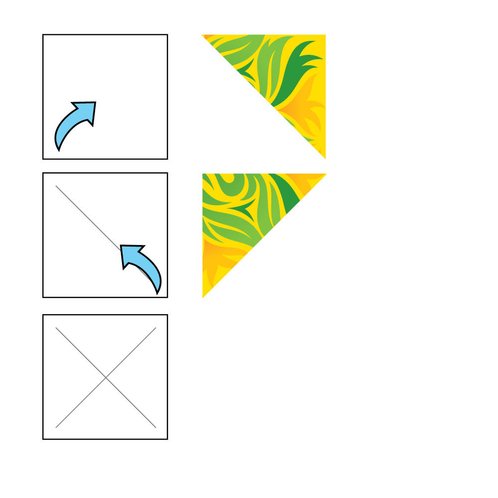

Take your square paper and from one corner fold it over onto the other corner (it should create a triangle shape). Make sure that both edges and corners and lined up perfectly and then make your first crease. Make your second diagonal crease using the other corners.
 Back to main page